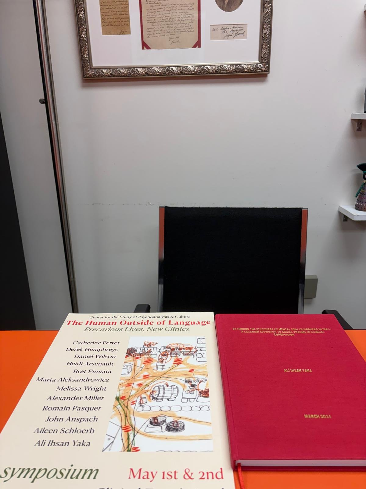

Saha Deneyimleri & İnsani Yardım (MHPSS)
Kolektif travma, kriz ve afet sahalarındaki ruh sağlığı ve psikososyal destek çalışmalarından seçilmiş örnekler.
6 Şubat Depremleri Sonrası Koruma Çalışmaları
2023 yılında 6 Şubat depremlerinin ardından Türkiye’de yürütülen müdahalede koruma görevlisi olarak çalıştı.
Gönüllü psikososyal destek çalışması hakkında PİRHA haberi →Ninova Ovası’nda Psikoterapi ve Eğitim
2020–2021 döneminde Ninova Ovası’nda danışman psikoterapist ve eğitmen olarak görev yaptı.

Güney Sudan’da MHPSS Teknik Danışmanlığı
2019–2020 döneminde Güney Sudan’da MHPSS Teknik Danışmanı olarak görev yaptı.
Resmi Görevlendirme Belgesi (Ordre de Mission · PDF) →Ninova Ovası’nda Ruh Sağlığı Program Yönetimi
2017 yılında Action Against Hunger bünyesinde Ninova Ovası’nda Mental Health and Care Practices (MHCP) Manager olarak çalıştı.
Erbil İleri Psikososyal Destek Eğitim Sertifikası (ACF · PDF) →Klinik Psikolog ve Ruh Sağlığı Görevlisi
MDM (2016) • Mental Health Officer
2015’te Şanlıurfa’da MSF Holland, 2016’da Diyarbakır’da MDM bünyesinde ruh sağlığı görevlerinde bulundu.